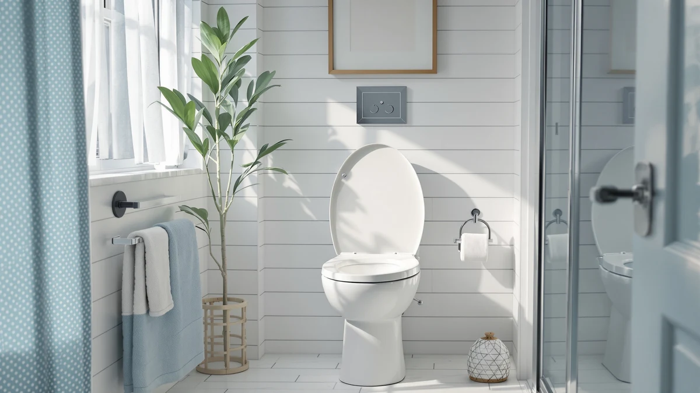

Best One Piece Toilet Seat (2026)
Prices and picks verified as of August 2026. Independent, reader-supported reviews.


Quick Answer
The Casta Diva One Piece Toilet is the best one piece toilet seat we found for most bathrooms, combining a 17.5-inch ADA comfort height with a dual-flush 1.0/1.28 GPF system and a 1000-gram MAP score. If you want the same flush performance for $40 less, the Sonderzone below is our value pick.
Our pick: Casta Diva One Piece Toilet, $239.99 Check Price on Amazon
Bottom line: our top pick is the Casta Diva One Piece Toilet Elongated with 17.5" ADA Height at $221.84. The best budget option is the Sonderzone Elongated One Piece Toilet for Bathroom at $189.99.
Things to Know Before You Buy
- Rough-in size comes first. All seven toilets here use a standard 12-inch rough-in, the distance from the wall to the center of the floor drain bolts. Measure yours before you buy, because a 10-inch or 14-inch rough-in won't fit.
- Comfort height is a specific measurement, not a marketing term. It means a seat 17 to 19 inches off the floor, matching ADA guidelines and standard chair height, and it's noticeably easier on your knees than the 14-to-15-inch bowls common in older homes.
- MAP score predicts real flush performance. The Maximum Performance test measures how many grams of solid waste a toilet clears in one flush. Every model in this guide is rated at 1000 grams, the top tier most brands publish.
- Soft-close seats protect more than your ears. They stop the lid from slamming, which is the biggest cause of cracked hinges and worn-out seats over time.
- Skirted designs cost more but clean up faster. A seamless, skirted one-piece toilet has no exposed bolts or crevices at the base, so a quick wipe is usually all the cleaning it needs.
Finding the best one piece toilet seat starts with understanding what "one piece" actually means: the tank and bowl are molded together instead of bolted apart, so there's no crevice at the base where grime and moisture collect. That single detail changes how a toilet looks, how easy it is to clean, and how it fits into a small bathroom footprint. We looked at seven one-piece models built for the U.S. market, all sized for a standard 12-inch rough-in, and narrowed them down by comfort height, flush performance, and seat quality.
Every toilet on this list sits at ADA comfort height, between 17 and 17.5 inches from floor to seat, which matters more than most buyers expect. A taller bowl reduces strain on your knees and hips every time you sit down or stand up, and it's close to the height most public restrooms use. Dual-flush technology shows up across the lineup too, giving you a light flush for liquid waste and a stronger one for solid waste, so your water bill stays down without you having to think about it.
Our top pick, the Casta Diva One Piece Toilet, pairs that comfort height with a dual-flush rating of 1.0 and 1.28 gallons per flush and a MAP score of 1000 grams, the industry benchmark for how much solid waste a toilet clears in a single flush. If you want something less expensive but still soft-close and dual-flush, the Sonderzone below costs $40 less and gives up almost nothing in daily use. We cover the tradeoffs for each pick, plus which ones to skip, further down. For most bathrooms, Casta Diva builds the best one piece toilet seat in this price range, and the picks below show you which alternative fits if your priorities are different.
Why You Should Trust Us
Ilane Tall has spent years covering bathroom fixtures and home renovation products for Best One Piece Toilets, working directly with plumbers and contractors to understand what holds up in daily use rather than what looks good in a listing photo alone. For this guide, she cross-checked manufacturer specs, including MAP flush ratings, GPF water usage, and rough-in measurements, against verified product data before writing a single recommendation. When you're picking the best one piece toilet seat for your bathroom, you're leaning on real installation experience, not a rewritten spec sheet.
How We Picked
We started with one-piece toilets sized for a standard 12-inch rough-in, since that fits the overwhelming majority of U.S. bathrooms and removes a lot of guesswork during installation. From there, every finalist had to meet ADA comfort height, 17 to 19 inches, because a lower seat is harder to live with once you've tried the taller version. We also favored models with a MAP score of 1000 grams or higher, since that number predicts real-world flush performance better than a manufacturer's marketing copy. Price mattered too: we kept the lineup between $189 and $260 so you have options across that range without stretching into luxury pricing for features you may not need.
How We Compared
We evaluated each toilet against its published specifications rather than relying on generic star ratings, comparing flush type (gravity-fed dual flush versus air-pressure assisted), GPF water usage for both the light and full flush settings, and seat mechanism (soft-close versus standard). We checked rough-in compatibility against the standard 12-inch U.S. measurement and verified comfort height claims against the ADA's 17-to-19-inch range. For the side-flush and foot-kick models, we noted where the mechanism differs from a standard button or lever, since that changes how the toilet fits into a household with kids or guests who aren't used to it. Every price listed reflects the figure available at the time of publishing.
Our Picks

Casta Diva One Piece Toilet
What we like
- 17.5-inch ADA comfort height seat that's easier on your knees than a standard bowl
- Dual-flush system (1.0/1.28 GPF) rated to save up to 16,500 gallons a year versus an older 3.5-gallon toilet
- MAP score of 1000 grams for a clog-resistant, single-flush clean
- Fully-glazed, wide trapway that clears waste quietly
Flaws but not dealbreakers
- $239.99 puts it at the higher end of this lineup
- Standard bolt-down base, not a skirted design, so cleaning around the foot takes a little more effort
| Material | — |
| Size | — |
The Casta Diva One Piece Toilet is our top pick because it doesn't force you to choose between comfort and efficiency. At 17.5 inches from floor to seat, it meets ADA comfort height guidelines, which makes a real difference if you or anyone in your household deals with knee or hip pain. The elongated bowl adds legroom over a round bowl with the same footprint, and the 12-inch rough-in fits the vast majority of U.S. bathroom layouts without any modification to your existing plumbing.
Where this toilet earns its price is the flush. The dual-flush system gives you 1.0 gallons for liquid waste and 1.28 gallons for solid waste, both well inside EPA WaterSense limits, and it backs that up with a MAP score of 1000 grams, meaning it clears a full test load in a single flush during standardized testing. The siphon jet and fully-glazed, wide trapway work together to keep that flush quiet, so you're not dealing with the running-water rattle that cheaper one-piece toilets are known for. The main tradeoff is price: at $239.99, it costs $50 more than the AKNIRL below, and you're paying for that comfort height and flush consistency rather than any visual flourish.

Casta Diva Elongated One Piece
What we like
- Skirted design integrates the tank and bowl into one seamless shape, with no seams collecting grime
- 17-inch ADA comfort height seat
- Dual-flush (1.1/1.6 GPF) meets EPA WaterSense water-conservation standards
- MAP score of 1000 grams with a fully-glazed trapway for a quiet, powerful flush
Flaws but not dealbreakers
- Same $239.99 price as our top pick, without the more water-efficient 1.0/1.28 GPF rating
- The smooth skirted panel shows water spots more than a traditional bolt-down base
| Material | — |
| Size | — |
If the boxy look of a standard toilet base bothers you, the Casta Diva Elongated One Piece solves that with a skirted design that hides the trapway behind a single continuous panel. There's no seam where the tank meets the bowl and no exposed bolts collecting grime at the floor, so a damp cloth is usually enough to keep it looking new. The 17-inch comfort height seat and elongated bowl match the ADA range, and the 12-inch rough-in installs the same way as any standard one-piece toilet.
The flush system uses a MAP-rated 1000-gram siphon jet with a dual-flush option of 1.1 gallons for liquid and 1.6 gallons for solid waste. That's slightly less water-efficient than our top pick's 1.0/1.28 GPF rating, so you'll use a bit more water per flush over a year, but the fully-glazed trapway still keeps things quiet and clog-resistant. At $239.99, you're paying the same price as the Casta Diva One Piece above for a cleaner-looking base rather than better flush efficiency, so choose this one if the seamless skirted look matters more to you than shaving a few gallons off your water bill.

Sonderzone Elongated One Piece Toilet
What we like
- $199.99 price, the second-lowest in this roundup
- 17.3-inch ADA comfort height with a soft-close seat included
- Dual-flush (1.1/1.6 GPF) rated at a 1000-gram MAP score, matching pricier models here
- Two large side access holes make floor bolt installation easier for a solo DIY install
Flaws but not dealbreakers
- Sonderzone is a newer brand with less of a track record than Casta Diva
- No skirted option, standard trapway base only
| Material | — |
| Size | — |
The Sonderzone Elongated One Piece Toilet is where this lineup's value case gets easy to make. At $199.99, it undercuts our top pick by $40 while matching its 1000-gram MAP score and staying inside the ADA comfort height range at 17.3 inches. The seat comes with a soft-close hinge included, which some toilets in this price bracket sell as a separate accessory, and the elongated bowl gives you the same extra legroom as the pricier picks above.
Installation is where Sonderzone put in extra thought: two large side access holes make it easier to reach the floor bolts without a second set of hands, which matters if you're replacing an old toilet by yourself on a weekend. The dual-flush system runs 1.1 gallons for liquid waste and 1.6 gallons for solid waste, on par with the Casta Diva Elongated above rather than the more efficient 1.0/1.28 GPF flush on our top pick. The one real question mark is brand history: Sonderzone doesn't have the years on the market that Casta Diva does, so if long-term parts availability matters to you, weigh that against the $40 you're saving.

Casta Diva Elongated One Piece
What we like
- Foot-kick or side-button flush, so you never have to touch a handle with your hands
- Air pressure-assisted flush works without electricity, unlike some assisted-flush toilets
- 17.2-inch ADA comfort height
- 1.0 GPF flush rate uses less water per flush than most dual-flush models here
Flaws but not dealbreakers
- No dual-flush option, every flush uses the same 1.0 gallons regardless of waste type
- The foot-kick mechanism takes a little getting used to for guests unfamiliar with it
| Material | — |
| Size | — |
The Casta Diva Elongated One Piece with foot-kick flush solves a problem the rest of this list doesn't address: touching a flush handle right after you've washed your hands. You can trigger the flush with a side button or a foot-kick, and the air pressure-assisted system doesn't need electricity to do it, so it works the same in a power outage as it does on any other day. The 17.2-inch comfort height and 12-inch rough-in match the rest of this lineup, so installation isn't any different from a standard one-piece toilet.
Because it runs a single flush rate of 1.0 GPF rather than a dual-flush system, it actually uses less water per flush than most of the dual-flush models above, though you don't get the option of a lighter flush for liquid waste specifically. At $236.99, it sits close to our top pick's price, and the tradeoff is straightforward: you're paying for the hands-free mechanism and non-electric assisted flush, not for a lower comfort height or a cheaper build. If hygiene in a shared or guest bathroom is your priority, this is the pick built for that; if the most water-efficient dual-flush option matters more to you, look at the Casta Diva One Piece above instead.

Casta Diva Elongated One Piece
What we like
- Compact footprint at 25.39 inches deep by 14.56 inches wide, smaller than most one-piece toilets in this lineup
- Seamless skirted design with no exposed trapway
- 17.5-inch ADA comfort height and dual-flush (1.0/1.28 GPF) matching our top pick's efficiency
- MAP score of 1000 grams
Flaws but not dealbreakers
- At $259.99, it's the most expensive toilet in this roundup
- The gold flush button is a distinct style choice that won't match every bathroom's fixtures
| Material | — |
| Size | — |
The Casta Diva Elongated One Piece with the gold flush button is built for a small bathroom that still needs a design moment. At 25.39 inches deep and 14.56 inches wide, it has a smaller footprint than the standard Casta Diva models above, which matters if you're working around a tight powder room or a renovated half-bath. The skirted design keeps the tank-and-bowl transition seamless, and the 17.5-inch ADA comfort height and elongated bowl match our top pick exactly.
The flush system carries the same 1.0/1.28 GPF dual-flush rating and 1000-gram MAP score as the Casta Diva One Piece above, so you aren't giving up any performance for the smaller size or the styling. You're paying for the gold button itself and the compact skirted build: at $259.99, it's $20 more than our top pick and the most expensive option here. If your bathroom hardware already leans warm-toned, the gold accent will look intentional rather than mismatched. If not, the standard Casta Diva One Piece gives you the same flush performance for less.

AKNIRL Elongated One Piece Toilet
What we like
- $189.99, the least expensive toilet in this lineup
- 17.3-inch ADA comfort height, matching pricier models here
- Soft-close seat included in the box
- MAP score of 1000 grams with dual-flush performance
Flaws but not dealbreakers
- AKNIRL has less brand history in the U.S. market than Casta Diva
- No skirted option, standard exposed trapway base
| Material | — |
| Size | — |
The AKNIRL Elongated One Piece Toilet is the budget anchor of this roundup, priced at $189.99, which is $50 less than our top pick. That price cut doesn't touch the specs that matter most: you still get a 17.3-inch ADA comfort height seat and a soft-close lid included, rather than sold separately the way some low-cost toilets handle it. The elongated bowl and 12-inch rough-in install the same way as every other toilet on this list.
AKNIRL rates the dual-flush system with a 1000-gram MAP score and a siphon jet flush, putting its flush performance in the same tier as toilets costing $50 more. The tradeoff is brand recognition: AKNIRL doesn't carry the years-on-market history that Casta Diva has built up, so if you want the reassurance of a longer track record, factor that in. For most bathrooms where budget is the deciding factor and a skirted design isn't a priority, this is the pick that gets you comfort height and soft-close for the least money.

Toilet One-Piece Round Side Flush
What we like
- Round bowl footprint fits tighter clearances than the elongated models above
- Side-mounted flush handle instead of a top-mounted button
- Soft-close seat with a bottom-lock hinge for easy removal and cleaning
- $209.99 price lands in the middle of this lineup
Flaws but not dealbreakers
- Round bowls give up legroom compared to the elongated bowls on every other pick here
- MilleLoom doesn't publish a MAP score or GPF rating the way the other brands in this roundup do
| Material | — |
| Size | 15.75-W1991-Elongated V |
The MilleLoom Toilet One-Piece Round Side Flush is the one round-bowl option in this roundup, and that shape is the whole point. A round bowl takes up less depth than an elongated bowl, which can be the difference between a toilet that fits your bathroom comfortably and one that crowds the door swing or a nearby vanity. The side-mounted flush handle is a departure from the top-button and foot-kick mechanisms on the other picks here, and it's a familiar layout if you're replacing an older toilet that used the same style handle.
The soft-close seat uses a bottom-lock hinge, which makes the seat easy to lift off entirely for a deep clean, something you won't find called out on most of the other listings here. At $209.99, it sits in the middle of this lineup's price range. The one gap in MilleLoom's listing is that it doesn't publish a MAP score or specific GPF flush rating the way Casta Diva, Sonderzone, and AKNIRL do, so if flush performance data matters to your decision, ask about it directly before you buy. For a small bathroom where every inch of clearance counts, the compact round footprint still makes this a reasonable pick.
Quick Comparison
| Product | Material | Price | Rating | Best for | Get it |
|---|---|---|---|---|---|
| Casta Diva One Piece Toilet | — | $239.99 | 4 | Comfort height + strong flush | View on Amazon → |
| Casta Diva Elongated One Piece | — | $239.99 | 4 | Easiest to clean | View on Amazon → |
| Sonderzone Elongated One Piece Toilet | — | $199.99 | 4 | Best value | View on Amazon → |
| Casta Diva Elongated One Piece | — | $236.99 | 4 | Hands-free flush | View on Amazon → |
| Casta Diva Elongated One Piece | — | $259.99 | 4 | Compact + design accent | View on Amazon → |
| AKNIRL Elongated One Piece Toilet | — | $189.99 | 4 | Lowest price | View on Amazon → |
| Toilet One-Piece Round Side Flush | — | $209.99 | 4 | Best for tight spaces | View on Amazon → |
The Competition
We also looked at several two-piece toilets in the same price range, where the tank bolts onto the bowl separately. They're often $30 to $50 cheaper, but the seam between tank and bowl collects moisture and grime in a way none of the one-piece toilets above do, so we left them out of this best one piece toilet seat roundup entirely.
A few electric pressure-assisted models came up during research too. They flush more forcefully than any toilet on this list, but they need a nearby outlet and add a failure point that a standard gravity or air-assisted flush doesn't have. For a primary bathroom, that's a maintenance headache most buyers don't want, so we didn't include them.
We also passed on a couple of elongated one-piece toilets with a 10-inch rough-in. They're built for older homes and mobile installations, but a 10-inch rough-in is uncommon enough in standard U.S. construction that recommending one broadly would send most readers shopping for a plumber before they'd even installed the toilet.